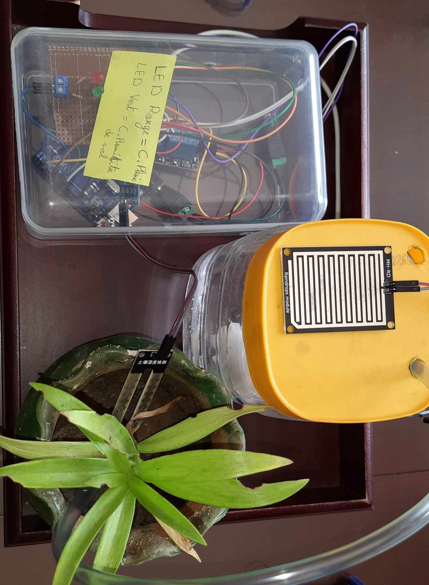
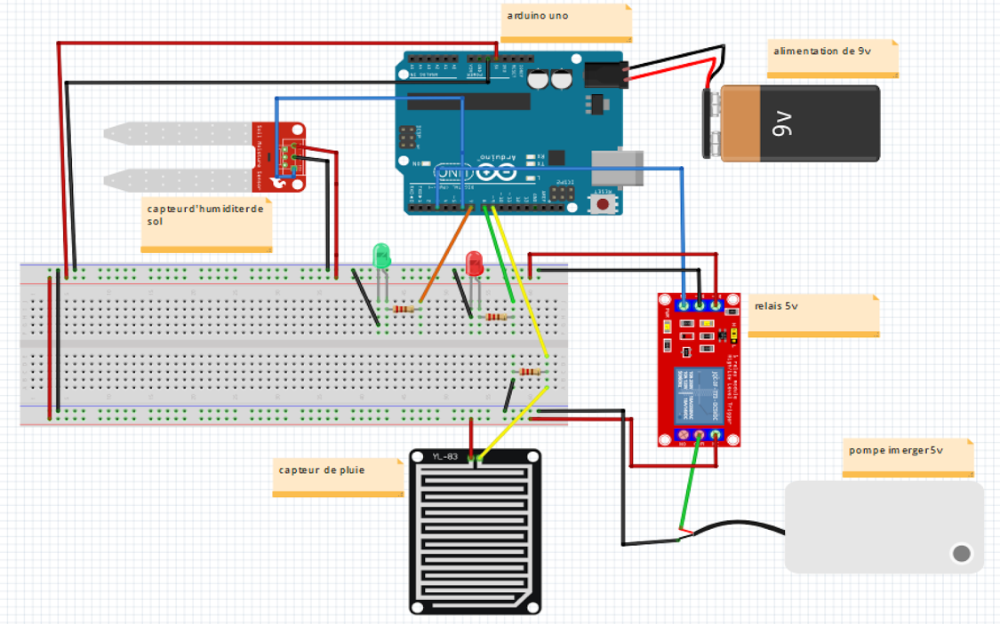
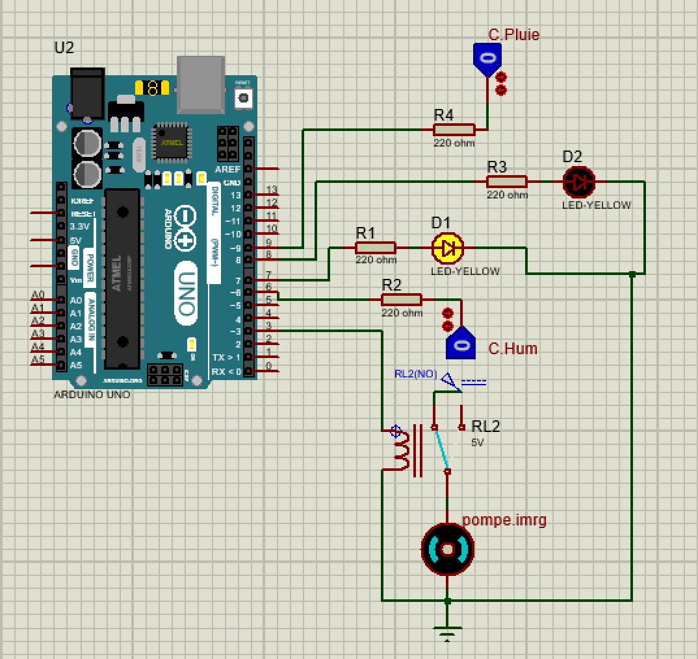
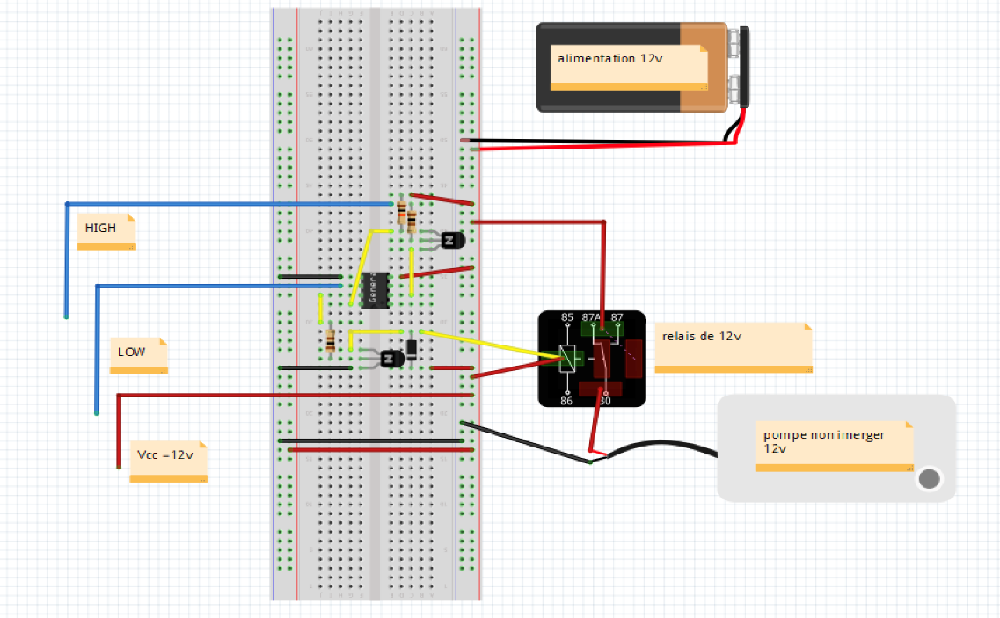
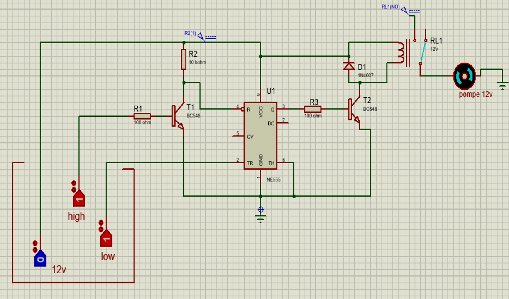
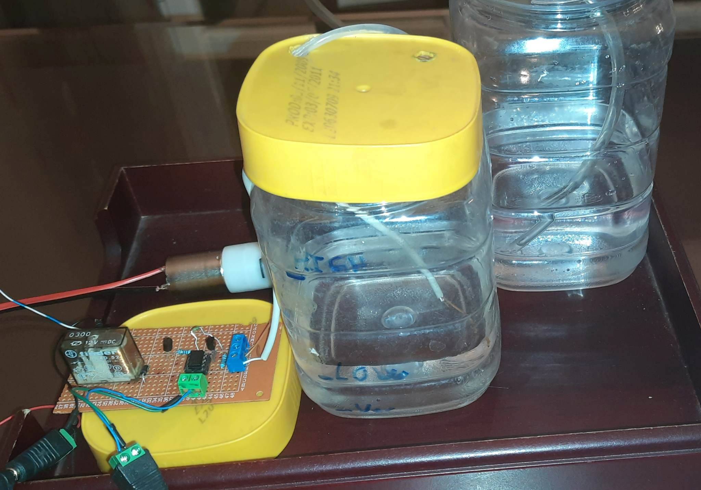

PROJET DE LICENCE · USTHB
Système d'irrigation automatique
Arroser au bon moment et garder la réserve d'eau pleine
Deux montages indépendants : l'un décide quand arroser selon l'humidité du sol et la pluie, l'autre remplit le réservoir tout seul grâce à des sondes de niveau.
CIRCUIT 1 · ARROSAGE
Arroser seulement quand le sol est sec et qu'il ne pleut pas
- Mesure. Le capteur d'humidité (deux électrodes plantées dans le sol, comparateur LM393) et le capteur de pluie envoient chacun un niveau logique 0 ou 1. Ils sont alimentés en 5 V et lus sur les broches 6 et 9 de la carte.
- Décision. Un sol sec fait monter la résistance entre les électrodes : la sortie passe à 1. Le capteur de pluie, lui, passe à 0 dès qu'une goutte le mouille. Le programme ne déclenche l'arrosage que si le sol est sec et qu'il ne pleut pas.
- Commande. La sortie 3 pilote un relais 5 V. Il permet à un simple signal logique de commander la pompe, une charge de puissance, sans la brancher directement sur la carte : la pompe est alimentée par les contacts du relais.
FONCTIONNEMENT
| SOL | PLUIE | POMPE |
|---|---|---|
| Sec | Pas de pluie | Marche |
| Sec | Averse | Arrêt |
| Humide | Pas de pluie | Arrêt |
| Humide | Averse | Arrêt |
if (water == HIGH && rain == HIGH) {
digitalWrite(3, HIGH); // relais activé : la pompe arrose
} else {
digitalWrite(3, LOW); // relais au repos : la pompe s'arrête
}
CAPTEURS
5 V · sortie 0/1
RELAIS
5 V · 10 A max
POMPE
Immergée 3–5 V
COMMANDE
Programme C++


CIRCUIT 2 · NIVEAU D'EAU
Remplir le réservoir sans microcontrôleur, avec deux sondes
- Détection. Trois sondes en cuivre plongent dans le réservoir : une sonde de référence reliée au +12 V, une sonde basse et une sonde haute. L'eau conduit le courant et ferme le contact entre la référence et chaque sonde qu'elle touche.
- Remplissage. Tant que la sonde basse est hors de l'eau, la sortie du NE555 est active. Elle polarise un transistor BC548 qui alimente le relais 12 V : la pompe remplit le réservoir et continue même quand le niveau repasse la sonde basse.
- Arrêt. Quand l'eau atteint la sonde haute, le circuit change d'état : le transistor de sortie se bloque, le relais retombe et la pompe s'arrête. Deux niveaux évitent de démarrer et d'arrêter la pompe à chaque petite variation.
FONCTIONNEMENT
| NIVEAU D'EAU | POMPE |
|---|---|
| Sous la sonde basse | Marche |
| Entre les deux sondes (en montée) | Marche |
| Sonde haute atteinte | Arrêt |
Le transistor de sortie est utilisé en commutation : bloqué ou saturé, jamais en régime linéaire. Une diode 1N4007 montée en inverse aux bornes de la bobine du relais protège le transistor à chaque coupure.
ALIMENTATION
12 V continu
TRANSISTORS
BC548 · NPN
RELAIS
12 V · inverseur
POMPE
Non immergée 12 V



MÉTHODE
De l'étude au prototype
- Choix des capteurs, des relais et des pompes selon la charge à commander
- Schémas de câblage sous Fritzing
- Simulation des deux circuits sous Proteus
- Programmation en C++ avec Arduino IDE
- Montage sur plaque de cuivre perforée, puis essais pratiques
RÉSULTATS
Ce que le prototype réalise
- Arrosage déclenché uniquement par un sol sec sans pluie
- Pompe commandée par relais à partir d'un signal logique
- Remplissage du réservoir démarré et arrêté automatiquement par les sondes
- Essais pratiques réalisés sur les deux circuits
CODE & DOCUMENTATION